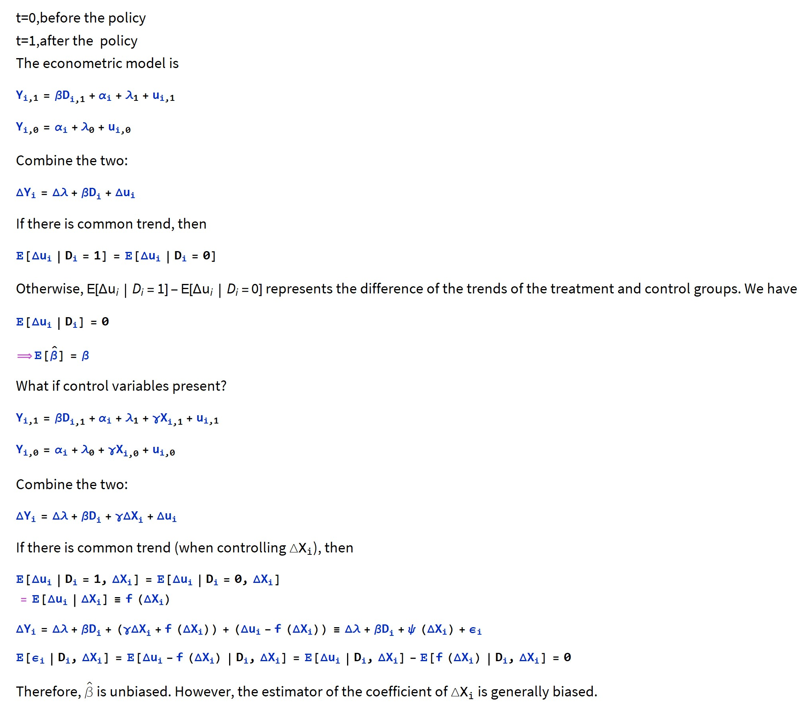

附录
附录1：双重差分法：共同趋势假设检验及动态效应分析
基于11.2的例子进行说明。利用两控区政策实施前的数据检验共同趋势假设。为简化，只考虑1995和1996年。如下表所示。1995年的情况如图11.2对应列。这里假设当年两控区城市和非两控区城市具有相同的时间趋势项\(\lambda_{1995}\)。这始终是可以做到的，假设当年两者的时间趋势项不同，可以将二者的差异放到个体效应中，经此调整后，当年两者的时间趋势项相同。1996年，非两控区城市i的时间趋势项是\(\lambda_{1996}\)，而两控区城市j的时间趋势项是\(\lambda_{1996}+\Delta\lambda\)，\(\Delta\lambda\)为两者时间趋势变化的差异。共同趋势成立 \(\Leftrightarrow\) \(\Delta\lambda=0\)。
表A1
| 1995 | 1996 | |
|---|---|---|
| TCZ | \(\lambda_{1995}+\alpha_i\) | \(\lambda_{1996}+\Delta\lambda+\alpha_i\) |
| non-TCZ | \(\lambda_{1995}+\alpha_j\) | \(\lambda_{1996}+\alpha_j\) |
因此，检验共同趋势假设是否成立的方法是估计如下的计量模型：
\[ y_{i,t}=\Delta\lambda\times TCZ_i\times Year_{1996}+\delta X_{i,t}+\lambda_t+\alpha_i+u_{i,t}\ t=1995, 1996 \] 只使用1995和1996年的数据。如果\(\Delta\lambda\)的系数不显著异于0，则可认为共同趋势假设成立；反之，认为共同趋势假设不成立。
注意：模型中没有变量\(TCZ_iYear_{1995}\)。因为为了分析的简便，我们在表A1中强令1995年两控区城市和非两控区城市的时间趋势项相同，这就是说，我们强行施加了假设：\(TCZ_iYear_{1995}\)的系数为0。
现实中，政策实施后在各年的效果可能不一样，是为政策的动态效应。原因有很多，如政策力度在各年不一。回到上例。假设共同趋势假设成立。设两控区政策使婴儿死亡率降低的幅度在1998和2000年分别为\(\rho_{1998}\)和\(\rho_{2000}\)。制表如下：
表A2
| 1995 | 1998 | 2000 | |
|---|---|---|---|
| TCZ | \(\lambda_{1995}+\alpha_i\) | \(\rho_{1998}+\lambda_{1998}+\alpha_i\) | \(\rho_{2000}+\lambda_{2000}+\alpha_i\) |
| non-TCZ | \(\lambda_{1995}+\alpha_j\) | \(\lambda_{1998}+\alpha_j\) | \(\lambda_{2000}+\alpha_j\) |
估计下面的模型即可得到政策在1998和2000年的效应： \[ y_{i,t}=\rho_{1998}\times TCZ_i\times Year_{1998}+\rho_{2000}\times TCZ_i\times Year_{2000}\\+\delta X_{i,t}+\lambda_t+\alpha_i+u_{i,t}\ t=1995, 1998, 2000 \]
注意，只用到1995、1998和2000年的数据。
可以把共同趋势假设检验和政策动态效应估计放到一起进行。Tanaka（2015）使用了1991-2000年的数据，为达此目的，将计量模型设置为：
\[ y_{i,t}=\rho_{1992}TCZ_iYear_{1992}+\rho_{1993}TCZ_iYear_{1993}+\rho_{1994}TCZ_iYear_{1994}\\+\rho_{1995}TCZ_iYear_{1995}+\rho_{1996}TCZ_iYear_{1996}+\rho_{1997}TCZ_iYear_{1997}\\+\rho_{1998}TCZ_iYear_{1998}+\rho_{1999}TCZ_iYear_{1999}+\rho_{2000}TCZ_iYear_{2000}\\+\delta X_{i,t}+\lambda_t+\alpha_i+u_{i,t},\ t=1991,1992,...,2000 \] 如果\(\rho_{1992}, \rho_{1993}, \rho_{1994}, \rho_{1995}, \rho_{1996}, \rho_{1997}\)都不显著，可以认为共同趋势假设成立；反之，则不成立。如果共同趋势假设成立，\(\rho_{1998}, \rho_{1999}, \rho_{2000}\)的估计系数反映了政策的动态效应。
附录2：双重差分法的估计量无偏吗？
命题：如果共同时间趋势假设成立，那么，政策虚拟变量的系数的最小二乘估计量是无偏的。
Please see a proof for the case with only two periods, one period before a policy and the other after the policy.
 图A1：Proof for the unbiasness of the DID estimator
附录3：Stata操作指引
Stata本身的帮助文档提供了使用的使用指导。如欲知如何使用regress命令，在Stata命令框中输入：“help regress”，即跳出对该命令使用的详细说明，包括举例。
陈强（2015）《计量经济学及Stata应用》介绍了常见的计量模型在Stata中的实现，可作为Stata操作的工具书翻阅。
也可以求助Stata操作于AI。自Chatgpt问世，AI展现了强大的能力。可能用作科研助手。国外的AI包括：Chatgpt、Copilot和Claud等。国内的AI包括：通义千问、星火大模型等。以下是我与某AI一段连续问答，藉此说明如何把AI变成我们使用Stata时的助手：
问：你好，我手头有一个横截面数据，名为“WAGE1.dta”，它每一个观测值表示一个个人，共有526个观测值。我已在stata中打开这一数据。数据中有一个变量名为y，它表示工资的对数。还有一个变量名为x，表示受教育年限。我想用y对x回归，请问应使用什么命令？
AI答：您好！您可以使用以下命令进行回归：reg y x。其中，y是被解释变量，x是解释变量。如果您想要去掉截距项，可以使用以下命令：reg y x, noconstant。
问：我想用y对x回归，只用前480个观测值，用什么命令？
AI答：您好！您可以使用以下命令进行回归：reg y x in 1/480。其中，y是被解释变量，x是解释变量，in 1/480表示只用前480个观测值。如果您想要去掉截距项，可以使用以下命令：reg y x in 1/480, noconstant。
问：我想计算y和x的相关系数，使用什么命令？
AI答：您好！您可以使用以下命令计算y和x的相关系数：pwcorr y x。如果您想要计算偏相关系数，可以使用以下命令：pcorr y x。
问：我想生成一个变量z，它取值为x的10倍，使用什么命令？
AI答：您好！您可以使用以下命令生成一个变量z，它取值为x的10倍：gen z = 10*x。
问：用工资的对数对受教育年限回归，受教育年限的系数是什么含义？
AI答：当用工资的对数对受教育年限回归时，受教育年限的系数表示的是：当工资的对数增加1个单位时，受教育年限的变化量。
问：I regress the logarithm of wage on years of education. How do I interpret the coefficient of years of education?
AI答：When you regress the logarithm of wage on years of education, the coefficient of years of education represents the percentage change in wage associated with a one-unit increase in years of education.
说明：
- AI回答的质量依赖于问问题的质量（准确性和方式等），提高提问题的水平很重要；
- AI的回答未必是正确的，须予查证；
- AI基于概率模型，所以，重复问相同的问题，得到的回答未必完全相同；
- 使用中文和英文提相同的问题，得到的答案可能很不一样，这是由于训练AI的中英文素材不一样。
附录4：科学写作
Gopen（1990）写道：
In our experience, the misplacement of old and new information turns out to be the No. 1 problem in American professionalwriting today.
所谓旧信息（old information）指已在前文中出现过的信息，新信息（new information）指首次出现的信息。
应该怎么做？Gopen（1990）继续写道：
Put in the topic position the old information that links backward; putinthe stress position the new information you want the reader to emphasize.
例：“图书馆前有一只猫。这只猫是白色的。”在第一句中，“猫”已出现，故“这只猫”属于旧信息，出现在第二句开头。“白色”是新信息，出现在第二句结尾。
ACEMOGLU et al.（2001）第一段：
What are the fundamental causes of the large differences in income per capita across countries? Although there is still little consensus on the answer to this question, differences in institutions and property rights have received considerable attention in recent years. Countries with better “institutions,” more secure property rights, and less distor tionary policies will invest more in physical and human capital, and will use these factors more efficiently to achieve a greater level of income (e.g., Douglass C. North and Robert P. Thomas, 1973; Eric L. Jones, 1981; North, 1981). This view receives some support from cross-country correlations between measures of property rights and economic development (e.g., Stephen Knack and Philip Keefer, 1995; Paulo Mauro, 1995; Robert E. Hall and Charles I. Jones, 1999; Dani Rodrik, 1999), and from a few micro studies that investigate the relationship between property rights and investment or output (e.g., Timothy Besley, 1995; Christopher Mazingo, 1999; Johnson et al., 1999).
注意：每一句都以旧信息开头（加粗显示）。
这一原则宜适用于中文科学写作。且看金庸倚天屠龙记：
（第四回 字作丧乱意彷徨）
忽听得背后有人幽幽叹了口气。这一下叹息,在黑沉沉的静夜中听来大是鬼气森森,张翠山霍地转身,却见背后竟无一人,游目环顾,除了湖上小舟中那个单身游客之外,四下里寂无人影。张翠山微觉惊讶,斜睨舟中游客,只见他青衫方巾,和自己一样,也是作文士打扮,朦胧中看不清他的面貌,只见他侧面的脸色极是苍白,给碧纱灯笼一照,映着湖中绿波,寒水孤舟,冷冷冥冥,竟不似尘世间人。但见他悄坐舟中,良久良久,除了风拂衣袖,竟是一动也不动。
…
忽听得桨声响起，小舟已缓缓荡向湖心，但听那少女抚琴歌道：“今夕兴尽，来宵悠悠，六和塔下，垂柳扁舟。彼君子兮，宁当来游？”舟去渐远，歌声渐低，但见波影浮动，一灯如豆，隐入了湖光水色。
第五回 皓臂似玉梅花妆
钱塘江到了六和塔下转一个大弯，然后直向东流。该处和府城相距不近，张翠山脚下虽快，得到六和塔下，天色也已将黑，只见塔东三株大柳树下果然系着一艘扁舟。钱塘江中的江船张有风帆，自比西湖里的游船大得多了，但船头挂着两盏碧纱灯笼，却和昨晚所见的一般模样。张翠山心中怦怦而跳，定了定神，走到大柳树下，只见碧纱灯下，那少女独坐船头，身穿淡绿衫子，却已改了女装。
…
张翠山本来一意要问她昨晚的事，这时见她换了女子装束，却踌躇起来，忽听那少女仰天吟道：“抱膝船头，思见嘉宾，微风波动，惘焉若醒。”
文字特点：符合科学写作的要求；常省略，短句多，长短交错，体现了中文的优美（节奏感，韵律感）。
参考文献
- 陈强. 计量经济学及Stata应用[M]. 高等教育出版社, 2015.
- Gopen G D, Swan J A. The science of scientific writing[J]. American scientist, 1990, 78(6): 550-558.